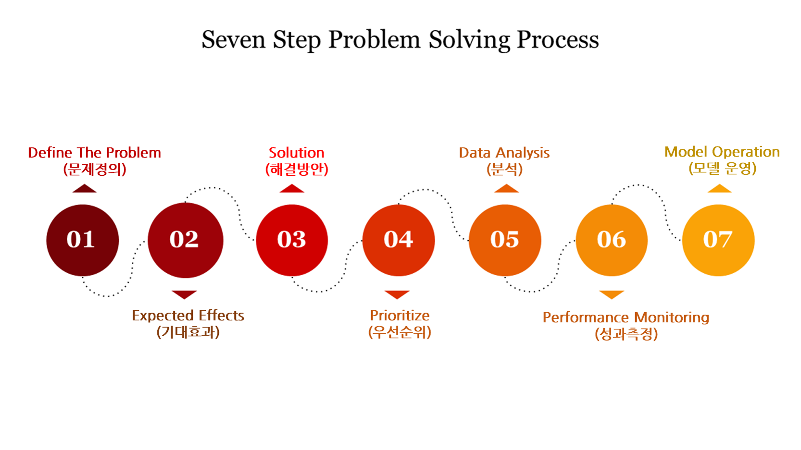
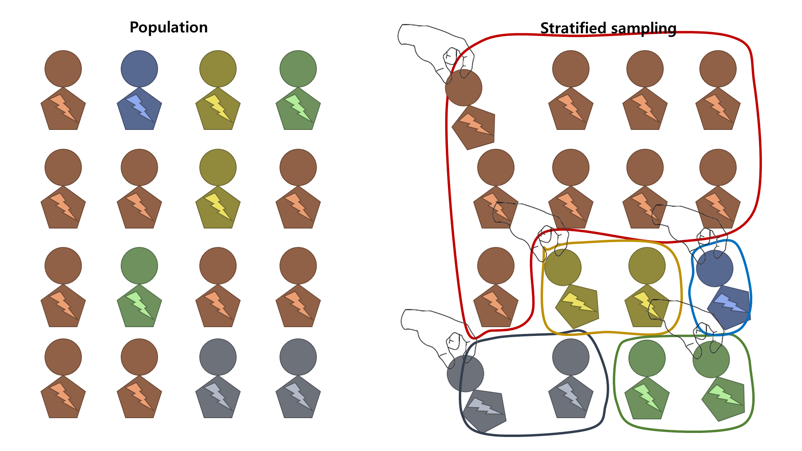

본 포스팅은 패스트캠퍼스 50개 프로젝트로 완벽하게 끝내는 머신러닝 시그니쳐의 강의내용을 바탕으로 참고하여 작성하였습니다.

01. 문제해결 프로세스 기획
패스트캠퍼스 강의 중 박지환 강사님께서 준비 해주신 이커머스 데이터 분석 예제를 참고하여 진행하였습니다. 주어진 문제의 시나리오는 아래와 같습니다.
이 시나리오를 기반으로 문제해결 프로세스 Figure 1 에 따라 7가지 단계를 아래와 같이 정의할 수 있습니다.
현재 Step 1~4의 단계가 완료되어 데이터 분석을 수행해야 하는 단계라고 간주하겠습니다.
02. Data Readiness Check & Sampling
사용하고자 하는 데이터는 UCI Machine Learning Repository에서 제공하는 Online Retail 데이터를 사용해 진행했습니다.
이 Online Retail 데이터를 A사에서 수집한 고객 거래 이력 데이터로 간주하고 해당 데이터에 대한 기본적인 전처리를 수행하겠습니다.
02-01. Data Info Check
주어진 데이터는 e-commerce 온라인 구매 데이터로 데이터 명세표는 아래와 같습니다.
InvoiceNo |
StockCode |
Description |
Quantity |
InvoiceDate |
UnitPrice |
CustomerID |
Country |
|---|---|---|---|---|---|---|---|
| 송장번호 | 재고코드 | 상세설명 | 수량 | 송장날짜 | 개당가격 | 고객ID | 국가 |
| Categorical | Categorical | Categorical | Integer | Date | Continuous | Categorical | Categorical |
이제 수집된 데이터의 기본적인 정보를 확인해 보겠습니다.
# A tibble: 6 × 8
InvoiceNo StockCode Description Quantity InvoiceDate UnitPrice CustomerID Country
<chr> <chr> <chr> <int> <dttm> <dbl> <chr> <chr>
1 489434 85048 "15CM CHRISTMAS GLASS BALL 20 LIGHTS" 12 2009-12-01 07:45:00 6.95 13085 United Kingdom
2 489434 79323P "PINK CHERRY LIGHTS" 12 2009-12-01 07:45:00 6.75 13085 United Kingdom
3 489434 79323W "WHITE CHERRY LIGHTS" 12 2009-12-01 07:45:00 6.75 13085 United Kingdom
4 489434 22041 "RECORD FRAME 7\" SINGLE SIZE" 48 2009-12-01 07:45:00 2.1 13085 United Kingdom
5 489434 21232 "STRAWBERRY CERAMIC TRINKET BOX" 24 2009-12-01 07:45:00 1.25 13085 United Kingdom
6 489434 22064 "PINK DOUGHNUT TRINKET POT" 24 2009-12-01 07:45:00 1.65 13085 United KingdomData 크기 확인
Data type 확인
Rows: 1,067,370
Columns: 8
$ InvoiceNo <chr> "489434", "489434", "489434", "489434", "489434", "489434", "489434", "489434", "489435", "489435", "489435", "489435", "489436", "489436", "489436", "489436", "489436", "489436"…
$ StockCode <chr> "85048", "79323P", "79323W", "22041", "21232", "22064", "21871", "21523", "22350", "22349", "22195", "22353", "48173C", "21755", "21754", "84879", "22119", "22142", "22296", "222…
$ Description <chr> "15CM CHRISTMAS GLASS BALL 20 LIGHTS", "PINK CHERRY LIGHTS", "WHITE CHERRY LIGHTS", "RECORD FRAME 7\" SINGLE SIZE", "STRAWBERRY CERAMIC TRINKET BOX", "PINK DOUGHNUT TRINKET POT",…
$ Quantity <int> 12, 12, 12, 48, 24, 24, 24, 10, 12, 12, 24, 12, 10, 18, 3, 16, 3, 12, 12, 12, 16, 4, 2, 12, 12, 12, 3, 6, 8, 8, 24, 6, 6, 12, 2, 1, 2, 2, 2, 3, 12, 12, 6, 3, 12, 12, 12, 12, 6, 6…
$ InvoiceDate <dttm> 2009-12-01 07:45:00, 2009-12-01 07:45:00, 2009-12-01 07:45:00, 2009-12-01 07:45:00, 2009-12-01 07:45:00, 2009-12-01 07:45:00, 2009-12-01 07:45:00, 2009-12-01 07:45:00, 2009-12-0…
$ UnitPrice <dbl> 6.95, 6.75, 6.75, 2.10, 1.25, 1.65, 1.25, 5.95, 2.55, 3.75, 1.65, 2.55, 5.95, 5.45, 5.95, 1.69, 6.95, 1.45, 1.65, 1.65, 3.39, 3.75, 8.50, 4.65, 2.10, 2.10, 5.95, 2.95, 1.25, 1.25…
$ CustomerID <chr> "13085", "13085", "13085", "13085", "13085", "13085", "13085", "13085", "13085", "13085", "13085", "13085", "13078", "13078", "13078", "13078", "13078", "13078", "13078", "13078"…
$ Country <chr> "United Kingdom", "United Kingdom", "United Kingdom", "United Kingdom", "United Kingdom", "United Kingdom", "United Kingdom", "United Kingdom", "United Kingdom", "United Kingdom"…변수별 결측치 확인
InvoiceNo StockCode Description Quantity InvoiceDate UnitPrice CustomerID Country
0 0 4382 0 0 0 243007 0 고객 식별 정보인 CustomerID 같은 변수에 결측치가 있는 경우에는 추후에 해당 고객에 대한 정보를 알 수 없으므로 사전에 정보를 알 수 없는 불분명한 데이터로 취급하여 삭제하는 것이 좋습니다.
Outlier 확인
Quantity UnitPrice
Min. :-80995.00 Min. : 0.00
1st Qu.: 2.00 1st Qu.: 1.25
Median : 5.00 Median : 1.95
Mean : 12.41 Mean : 3.68
3rd Qu.: 12.00 3rd Qu.: 3.75
Max. : 80995.00 Max. :38970.00 구매 수량을 나타내는 Quantity는 음수 값을 가질 수 없으나, 반품 물품에 대한 값이 있으므로 확인 후 처리해야 합니다. 여기서는 Quantity가 음수인 값은 이상치(Outlier)라고 간주하고 삭제하겠습니다.
# A tibble: 18,744 × 8
InvoiceNo StockCode Description Quantity InvoiceDate UnitPrice CustomerID Country
<chr> <chr> <chr> <int> <dttm> <dbl> <chr> <chr>
1 C489449 22087 PAPER BUNTING WHITE LACE -12 2009-12-01 10:33:00 2.95 16321 Australia
2 C489449 85206A CREAM FELT EASTER EGG BASKET -6 2009-12-01 10:33:00 1.65 16321 Australia
3 C489449 21895 POTTING SHED SOW 'N' GROW SET -4 2009-12-01 10:33:00 4.25 16321 Australia
4 C489449 21896 POTTING SHED TWINE -6 2009-12-01 10:33:00 2.1 16321 Australia
5 C489449 22083 PAPER CHAIN KIT RETRO SPOT -12 2009-12-01 10:33:00 2.95 16321 Australia
6 C489449 21871 SAVE THE PLANET MUG -12 2009-12-01 10:33:00 1.25 16321 Australia
7 C489449 84946 ANTIQUE SILVER TEA GLASS ETCHED -12 2009-12-01 10:33:00 1.25 16321 Australia
8 C489449 84970S HANGING HEART ZINC T-LIGHT HOLDER -24 2009-12-01 10:33:00 0.85 16321 Australia
9 C489449 22090 PAPER BUNTING RETRO SPOTS -12 2009-12-01 10:33:00 2.95 16321 Australia
10 C489459 90200A PURPLE SWEETHEART BRACELET -3 2009-12-01 10:44:00 4.25 17592 United Kingdom
# ℹ 18,734 more rows중복 데이터 확인
df %>%
mutate(duplicated = duplicated(.)) %>%
count(duplicated)# A tibble: 2 × 2
duplicated n
<lgl> <int>
1 FALSE 779494
2 TRUE 26125# 중복 데이터 확인
df %>%
filter(duplicated(df) | duplicated(df, fromLast = TRUE))# A tibble: 50,838 × 8
InvoiceNo StockCode Description Quantity InvoiceDate UnitPrice CustomerID Country
<chr> <chr> <chr> <int> <dttm> <dbl> <chr> <chr>
1 489517 21913 VINTAGE SEASIDE JIGSAW PUZZLES 1 2009-12-01 11:34:00 3.75 16329 United Kingdom
2 489517 21912 VINTAGE SNAKES & LADDERS 1 2009-12-01 11:34:00 3.75 16329 United Kingdom
3 489517 21821 GLITTER STAR GARLAND WITH BELLS 1 2009-12-01 11:34:00 3.75 16329 United Kingdom
4 489517 22319 HAIRCLIPS FORTIES FABRIC ASSORTED 12 2009-12-01 11:34:00 0.65 16329 United Kingdom
5 489517 22130 PARTY CONE CHRISTMAS DECORATION 6 2009-12-01 11:34:00 0.85 16329 United Kingdom
6 489517 21912 VINTAGE SNAKES & LADDERS 1 2009-12-01 11:34:00 3.75 16329 United Kingdom
7 489517 21491 SET OF THREE VINTAGE GIFT WRAPS 1 2009-12-01 11:34:00 1.95 16329 United Kingdom
8 489517 22130 PARTY CONE CHRISTMAS DECORATION 6 2009-12-01 11:34:00 0.85 16329 United Kingdom
9 489517 22319 HAIRCLIPS FORTIES FABRIC ASSORTED 12 2009-12-01 11:34:00 0.65 16329 United Kingdom
10 489517 21913 VINTAGE SEASIDE JIGSAW PUZZLES 1 2009-12-01 11:34:00 3.75 16329 United Kingdom
# ℹ 50,828 more rows26,125개의 데이터가 중복되었음을 확인할 수 있습니다. 데이터의 정확성과 품질을 위해 중복 데이터를 삭제하겠습니다.
# A tibble: 1 × 1
n
<int>
1 779494이렇게 데이터에 대한 기본적인 정보와 전처리를 마치고 데이터의 형태를 보면 아래와 같이 기존 1,067,370개의 행에서 779,494개의 행으로 줄었습니다.
02-03. Data Readiness Check
데이터에 대한 기본 정보를 확인했으니 이제 현재 가지고 있는 데이터로 앞서 기획한 문제해결 프로세스를 적용할 수 있는지 점검해야 합니다.
(1) Target Label 생성
당월 구매 고객이 다음 달에 재구매 시 해당 고객을 재구매 고객으로 정의하겠습니다. 예를들어, 2011년 01월에 구매한 고객이 2011년 02월에 구매를 한다면 해당 고객을 재구매 고객으로 정의하는 것입니다.
library(lubridate)
# 기준년월 변수 생성: bsym - %Y-%m 형식
df <- df %>% mutate(bsym = format(InvoiceDate, "%Y-%m"))
# 원본 데이터 저장: df_origin
df_origin <- df
# 데이터 적재 기간 확인: 2009-12-01 ~ 2011-12-09 (약 2년)
min(df$InvoiceDate); max(df$InvoiceDate)[1] "2009-12-01 07:45:00 UTC"[1] "2011-12-09 12:50:00 UTC"기본적인 전처리가 완료된 데이터를 df_origin으로 저장하여 보존하고, 이후 있을 전처리를 진행하겠습니다. Target label은 기준년월(bsym)과 고객(CustomerID)에만 영향을 받으므로 해당 두 변수를 고유하게 갖는 데이터로 재구성하겠습니다.
[1] 25598 2# A tibble: 6 × 2
bsym CustomerID
<chr> <chr>
1 2009-12 13085
2 2009-12 13078
3 2009-12 15362
4 2009-12 18102
5 2009-12 12682
6 2009-12 18087 2009년 12월부터 2011년 12월까지 연도 및 월(bsym)별로 당월 구매 고객이 내월 구매 고객일 경우 1을 갖는 target 변수(binary: 0,1)를 만들어 보겠습니다.
# 주어진 bsym에 구매 고객이 내월 구매 고객일 경우 1, 그렇지 않으면 0 값을 갖는
# target 변수 생성: process_bsym()
process_bsym <- function(bsym_value, df) {
df_left <- filter(df, bsym == bsym_value)
bsym_1m <- ymd(paste0(bsym_value, "-01")) %m+% months(1) %>% format("%Y-%m")
df_right <- df %>%
filter(bsym == bsym_1m) %>%
distinct(CustomerID) %>%
mutate(target = 1)
df_merge <- left_join(df_left, df_right, by = "CustomerID") %>%
mutate(target = ifelse(is.na(target), 0, target))
return(df_merge)
}
# 모든 bsym 값에 대해 process_bsym 함수 적용
df_all <- map_df(unique(df$bsym), ~process_bsym(.x, df))
df_all %>% head()# A tibble: 6 × 3
bsym CustomerID target
<chr> <chr> <dbl>
1 2009-12 13085 1
2 2009-12 13078 1
3 2009-12 15362 0
4 2009-12 18102 1
5 2009-12 12682 1
6 2009-12 18087 1(2) Target Ratio 확인
연도 및 월별로 재구매 고객 여부 변수 target의 비율을 확인해 보겠습니다.
# 기준년월 기준 Target ratio 확인
options(pillar.sigfig = 6)
df_target <- df_all %>%
group_by(bsym) %>%
reframe(total_y = sum(target),
count_y = n(),
ratio = total_y/count_y)
df_target %>%
print(n = nrow(.))# A tibble: 25 × 4
bsym total_y count_y ratio
<chr> <dbl> <int> <dbl>
1 2009-12 337 955 0.352880
2 2010-01 262 720 0.363889
3 2010-02 314 774 0.405685
4 2010-03 378 1057 0.357616
5 2010-04 345 942 0.366242
6 2010-05 368 966 0.380952
7 2010-06 392 1041 0.376561
8 2010-07 351 928 0.378233
9 2010-08 365 911 0.400659
10 2010-09 463 1145 0.404367
11 2010-10 657 1497 0.438878
12 2010-11 524 1607 0.326073
13 2010-12 324 885 0.366102
14 2011-01 262 741 0.353576
15 2011-02 290 758 0.382586
16 2011-03 304 974 0.312115
17 2011-04 368 856 0.429907
18 2011-05 410 1056 0.388258
19 2011-06 365 991 0.368315
20 2011-07 388 949 0.408851
21 2011-08 425 935 0.454545
22 2011-09 489 1266 0.386256
23 2011-10 622 1364 0.456012
24 2011-11 371 1665 0.222823
25 2011-12 0 615 0 현재 주어진 데이터는 2011년 12월이 마지막이기 때문에 내월이 없는 2011년 12월은 target 변수가 1 값을 가질 수 없습니다. 따라서 분석 대상에서 제외시키겠습니다.
df_target <- df_target %>% filter(bsym != '2011-12')
df_all <- df_all %>% filter(bsym != '2011-12')
df_target %>%
print(n = nrow(.))# A tibble: 24 × 4
bsym total_y count_y ratio
<chr> <dbl> <int> <dbl>
1 2009-12 337 955 0.352880
2 2010-01 262 720 0.363889
3 2010-02 314 774 0.405685
4 2010-03 378 1057 0.357616
5 2010-04 345 942 0.366242
6 2010-05 368 966 0.380952
7 2010-06 392 1041 0.376561
8 2010-07 351 928 0.378233
9 2010-08 365 911 0.400659
10 2010-09 463 1145 0.404367
11 2010-10 657 1497 0.438878
12 2010-11 524 1607 0.326073
13 2010-12 324 885 0.366102
14 2011-01 262 741 0.353576
15 2011-02 290 758 0.382586
16 2011-03 304 974 0.312115
17 2011-04 368 856 0.429907
18 2011-05 410 1056 0.388258
19 2011-06 365 991 0.368315
20 2011-07 388 949 0.408851
21 2011-08 425 935 0.454545
22 2011-09 489 1266 0.386256
23 2011-10 622 1364 0.456012
24 2011-11 371 1665 0.222823 Min. 1st Qu. Median Mean 3rd Qu. Max.
0.2228 0.3623 0.3796 0.3784 0.4047 0.4560 연도 및 월(bsym)별 target의 비율은 22.3% ~ 45.6%의 값을 가지며, 대부분의 월에서 36% ~ 40% 정도의 비율을 갖습니다. 전체 데이터의 target의 비율을 보면 아래와 같이 약 37.5% 정도의 내달 재구매 비율을 갖습니다. 이 정도의 class imbalance에 대해서는 over-sampling을 하지 않고 분석을 진행해도 괜찮을 것 같습니다.
02-03. Data Sampling

현재 df_all에는 약 25,000건의 데이터가 있지만, 만일 데이터가 1억건 정도로 매우 큰 경우 모델링을 하기엔 부담스러울 수 있습니다. 이럴 경우를 대비해 해당 데이터를 모집단으로 간주하고 샘플링을 통해 데이터를 줄일 수 있습니다.
Under-sampling: Stratified sampling
관심 변수(target)에 대해 함께 살펴보고 싶은 변수가 있을 시(여기선 bsym), 해당 변수를 층화 변수로 두어 층화추출법(stratified sampling)을 실시할 수 있습니다. 샘플링 기법 중 하나인 층화추출법은 모집단을 층화 변수로 나눈 후 각 층/소집단 별로 독립적으로 표본을 뽑는 샘플링 방법입니다. 이로 인해 모집단 데이터에서 층화 변수와 관심 변수가 갖는 관계를 표본 데이터에서도 유지할 수 있다는 장점이 있습니다. 즉, 표본의 대표성을 확보할 수 있는 방법입니다.
현재 df_all 데이터를 모집단 데이터로 간주하고, 표본 데이터를 뽑고자 합니다. 이때 층화추출법을 사용하기 위해선 우선적으로 각 층(bsym)별 표본 크기가 주어져야 합니다. 이 과정을 표본 배분(sample allocation)이라고 합니다. 여기에서는 모집단 df_all의 bsym별 층 크기를 유지하기 위해 비례 배분(proportional allocation)을 사용하겠습니다. 비례 배분에 따른 표본 데이터의 표본 층 크기는 아래와 같습니다.
\[ n_h = n\times\frac{N_h}{\sum_{l=1}^HN_l} \]
df_all 데이터의 30%만 샘플링한다고 하겠습니다. 그럴 경우 필요한 층(bsym)별 표본 크기(nh)는 아래와 같습니다.
[1] 7495# 모집단 층 크기: Nh, 표본 층 크기: nh
df_target <- df_target %>%
mutate(N = nrow(df_all)) %>%
mutate(n = round(nrow(df_all) * 0.3)) %>%
relocate(count_y, .after = n) %>%
rename(Nh = count_y) %>%
mutate(nh = round(n*Nh/N)) %>%
group_by(bsym)
df_target %>% print(n=25)# A tibble: 25 × 7
# Groups: bsym [25]
bsym total_y ratio N n Nh nh
<chr> <dbl> <dbl> <int> <dbl> <int> <dbl>
1 2009-12 337 0.352880 24983 7495 955 287
2 2010-01 262 0.363889 24983 7495 720 216
3 2010-02 314 0.405685 24983 7495 774 232
4 2010-03 378 0.357616 24983 7495 1057 317
5 2010-04 345 0.366242 24983 7495 942 283
6 2010-05 368 0.380952 24983 7495 966 290
7 2010-06 392 0.376561 24983 7495 1041 312
8 2010-07 351 0.378233 24983 7495 928 278
9 2010-08 365 0.400659 24983 7495 911 273
10 2010-09 463 0.404367 24983 7495 1145 344
11 2010-10 657 0.438878 24983 7495 1497 449
12 2010-11 524 0.326073 24983 7495 1607 482
13 2010-12 324 0.366102 24983 7495 885 266
14 2011-01 262 0.353576 24983 7495 741 222
15 2011-02 290 0.382586 24983 7495 758 227
16 2011-03 304 0.312115 24983 7495 974 292
17 2011-04 368 0.429907 24983 7495 856 257
18 2011-05 410 0.388258 24983 7495 1056 317
19 2011-06 365 0.368315 24983 7495 991 297
20 2011-07 388 0.408851 24983 7495 949 285
21 2011-08 425 0.454545 24983 7495 935 281
22 2011-09 489 0.386256 24983 7495 1266 380
23 2011-10 622 0.456012 24983 7495 1364 409
24 2011-11 371 0.222823 24983 7495 1665 500
25 total 9374 1 24983 7495 24983 7495# 반올림 때문에 표본 층 크기가 n=7495 보다 1개 더 크므로
# 2011년 11월 표본 크기를 한 개 줄여주자
df_target$nh[df_target$bsym=='2011-11'] <- df_target$nh[df_target$bsym=='2011-11'] - 1이제 주어진 표본배분안에 따라 bsym별 30% 정도의 표본을 뽑아보겠습니다.
set.seed(123)
ord <- unique(df_target$bsym)
units <- sampling::strata(df_all, stratanames = "bsym", size = df_target$nh[1:24], method="srswor")
df_all_sample <- df_all %>%
slice(units$ID_unit)
df_all_sample %>% dim()[1] 7495 3이제 층화추출 후 표본 데이터 df_all_sample이 기존 모집단 데이터인 df_all의 bsym 별 target의 비율을 유지하는지 확인해 보겠습니다.
Code
library(gt)
library(gtExtras)
df_tmp <- df_all_sample %>%
group_by(bsym) %>%
reframe(sum_y = sum(target),
nh = n())
df_tmp2 <- df_tmp %>%
mutate(target_ratio = sum_y/nh,
target_ratio_pop = df_target$ratio[1:24]) %>%
pivot_longer(cols=c(target_ratio, target_ratio_pop), names_to = 'name') %>%
group_by(bsym) %>%
reframe(target_ratio = list(value))
df_tmp %>% left_join(df_tmp2, by='bsym') %>%
gt() %>%
gt_theme_nytimes() %>%
tab_header(title = "bsym별 target 비율") %>%
gt_plt_bar_stack(column = target_ratio, labels = c("target_ratio", "target_ratio_pop"), palette = c("skyblue", "hotpink"))| bsym별 target 비율 | |||
| bsym | sum_y | nh | target_ratio||target_ratio_pop |
|---|---|---|---|
| 2009-12 | 111 | 287 | |
| 2010-01 | 79 | 216 | |
| 2010-02 | 78 | 232 | |
| 2010-03 | 116 | 317 | |
| 2010-04 | 103 | 283 | |
| 2010-05 | 107 | 290 | |
| 2010-06 | 131 | 312 | |
| 2010-07 | 102 | 278 | |
| 2010-08 | 108 | 273 | |
| 2010-09 | 141 | 344 | |
| 2010-10 | 189 | 449 | |
| 2010-11 | 166 | 482 | |
| 2010-12 | 120 | 266 | |
| 2011-01 | 77 | 222 | |
| 2011-02 | 84 | 227 | |
| 2011-03 | 91 | 292 | |
| 2011-04 | 123 | 257 | |
| 2011-05 | 121 | 317 | |
| 2011-06 | 110 | 297 | |
| 2011-07 | 114 | 285 | |
| 2011-08 | 136 | 281 | |
| 2011-09 | 138 | 380 | |
| 2011-10 | 196 | 409 | |
| 2011-11 | 117 | 499 | |
[1] 0.3813209[1] 0.3752151이렇게 구성한 df_all_sample 데이터를 가지고 Data Mart를 만드는 과정을 다음 포스팅에서 다루겠습니다.